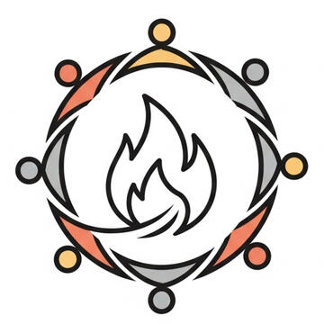

Putovný kruh
Mužsky kruh - okres Blansko
Toto je priestor pre mužov, ktorí hľadajú viac než len povrchné debaty. Priestor, kde môžeme odložiť svoje masky, hovoriť pravdu a načúvať bez súdenia. Stretávame sa pri ohni, aby sme našli spojenie sami so sebou a s ostatnými chlapmi na svojej ceste.
Základné piliere
Mužský kruh je bezpečný priestor, kde môžeme byť sami sebou – bez masiek, bez pretvárky a bez strachu z hodnotenia. Aby sme takýto priestor spoločne vytvorili a udržali, riadime sa niekoľkými jednoduchými, ale kľúčovými princípmi.

Termíny a miesta
Témy, termíny a miesta putovného kruhu.4. 3. 2026 17:30 - Jakou si chystám budoucnost
18. 3. 2026 17:30 - ???
Ako fungujeme?
Naše fungovanie je priame a jednoduché, postavené na dôvere a osobnej zodpovednosti.Hlavný komunikačný kanál: WhatsApp skupina
Odkaz na pripojenie sa nájdeš v pätičke stránky.Potvrdenie účasti: Chlapské slovo
V Putovnom kruhu neplatíme peniazmi, ale integritou. Tvoja registrácia nie je len anonymné kliknutie do štatistiky. Je to tvoje slovo, ktoré dávaš sám sebe a ostatným mužom v kruhu. Počítame s tebou – tak, ako sa ty môžeš spoľahnúť na nás.
Nechceš byť v ďalšej WhatsApp skupine?Chápeme to. Ak chceš len vedieť, kedy a kde sa koná najbližší kruh, nechaj nám na seba kontakt. Posielame len pozvánku na najbližšie kruh. Žiadny spam, žiadne motivačné citáty.
Základné Piliere Nášho Kruhu
1. Dôvera a Diskrétnosť: Čo sa povie v kruhu, zostane v kruhu.
Toto je najdôležitejšie pravidlo a absolútny základ našej dôvery. Príbehy, pocity a myšlienky, ktoré sú zdieľané v kruhu, sú posvätné a nikdy ich nevynášame von, ani o nich nehovoríme s nikým mimo kruhu. To nám všetkým dáva odvahu byť úprimní a zraniteľní.2. Hovorím od Srdca a za Seba
Keď zdieľame, hovoríme v prvej osobe – formou „Ja“. Zdieľame svoje vlastné pocity, skúsenosti a pohľady ("Ja cítim...", "Ja vnímam...", "V mojom živote..."). Nehovoríme za ostatných, negeneralizujeme a nefilozofujeme. Cieľom je hovoriť autenticky a spontánne to, čo je v nás práve teraz živé.3. Načúvam Srdcom a s Rešpektom
Keď iný muž zdieľa, dávame mu plnú pozornosť a dar nášho prítomného načúvania. Neplánujeme si v hlave vlastnú reč, neprerušujeme ho a nekomentujeme jeho zdieľanie. V kruhu si neradíme, neanalyzujeme ani nehodnotíme príbehy ostatných. Každý z nás je expertom na svoj vlastný život; našou úlohou je byť svedkom, nie sudcom či záchrancom.4. Hovoriaci Predmet
Slovo má vždy ten, kto v ruke drží hovoriaci kameň (alebo iný predmet určený kruhom). Tento predmet mu dáva plné právo na priestor a čas. Nikto iný v tej chvíli nehovorí. Ak sa muž rozhodne so slovami podeliť, je to v poriadku. Ak sa rozhodne v tichosti prežiť svoj čas s kameňom v ruke, je to rovnako cenné a plne rešpektované.5. Príchod a Odchod v Plnej Prítomnosti
Na stretnutia prichádzame včas, aby sme nerušili už vytvorenú atmosféru. Dávame si čas na to, aby sme "vnútorne dorazili" a nechali za sebou starosti bežného dňa. Celý proces kruhu, od zapálenia ohňa až po záverečné slovo, vnímame ako spoločný rituál, ktorý si zaslúži našu plnú prítomnosť.
Termíny a miesta
Najbližší kruhKedy: 4. 3. 2026 17:30
Kde: Babí doly
Téma: Jakou si chystám budoucnost?
V tomto čase, keď sa príroda pomaly chystá na nový začiatok, je to otázka, ktorá ide priamo do hĺbky.Súčasťou večera bude opäť aj možnosť skočiť do vody (povinné len pre odvážnych) a samozrejme oheň, ktorý je už takmer našou povinnosťou – tou najlepšou, aká môže byť.Okrajovo sa môžeme dotknúť aj toho, ako do našich plánov vstupuje svet technológií a AI, ktorý potichu mení pravidlá hry.Otázky na spoločné zamyslenie a zdieľanie:
-
Viem vôbec, čo chcem?
-
Alebo ma viac zamestnávajú obavy z toho, čo príde?
-
Pozerám sa na detaily, alebo na celkový obraz svojej cesty?
Pridáš sa?
Na WhatsApp skupine môžeš dať svoje slovo, že sa zúčastníš. Prípadne potvrď svoju účasť priamo cez SMS na číslo v pätičke.
Minulé kruhy
Najbližší kruhKedy: 19. 2. 2026 17:30
Kde: Adamov
Téma: Naše Závislosti – Páni alebo Otroci?
Pekné postáníčko u ohňa a priznajme si, kto z nás chlapov viac či menej prejavene je alebo aspoň bol vnútorne pyroman závislosťou :)?


Kedy: 4. 2. 2026 17:30
Kde: Lysice
Téma: slovo ako zbraňK tejto téme ma inšpirovalo video s Jordanom Petersonom:
This Is How You Become More ArticulateNakoniec sme sa u nás na záhrade zišli v peknom počte 4. Staronová kombinácia.

Kedy: 21. 1. 2026 17:30
Kde: Žernovník - u Vladimíra
Téma: SexTentorát sme využili zázemia Vladimíra, ktorý sa síce zdieľaním nepripojil, ale zdieľanie to bolo aj tak hlboké. Ponorili sme sa nakrátko aj do pramenných jazierok na pozemku a strávili kruh pod hviezdami.Téma zdá sa tak široká, že možno by stálo za to ju zopakovať, prípadne vypichnúť konkrétnu časť podtémou, nech dokážeme viac smerovať našu pozornosť.


Kedy: 7. 1. 2026 17:30
Kde: Bílovice u Jirky
Téma: Prvé Hranice – Kde sa to celé začalo?Nakoniec sme sa zišli štyria. Bolo to nečakané a o to lepšie. Načali sme tému, ktorá zdá sa dotýka viacero mužov. Viac v nasledujúcom termíne.Jirka poskytol výborné zázemie, v kontraste s poslednou návštevou v lete sme sa teraz stretli aj lúčili už po tme a bez tričiek sme teda tiež neboli :-).

Kedy: 29.9.2025 17:30
Kde: Babí doly - tentokrát s možnosťou kúpačy :)
Téma: Téma: Pasce a Slobody v Živote Muža – Medzi Očakávaniami a Vlastnou CestouExistujú knihy a teórie (ako napríklad "Manipulovaný muž" od Esther Vilar), ktoré provokatívne tvrdia, že muži sú v spoločnosti manipulovaní a chytení do pasce rolí, ktoré od nich očakávajú ženy a spoločnosť. Že sme vychovávaní k tomu, aby sme boli výkonní živitelia a ochrancovia, a za odmenu dostávame prijatie a intimitu.Kruh piatich mužov dokonca s dvomi odvážlivcami, ktorý skočili do vody bol opäť výživný. Knihu manipulatívny muž nechávam v histórii, keby si chcel niekto preštudovať a pripomenúť čo bolo inšpiráciou témy.


Najbližší kruhKedy: 4. 2. 2026 17:30
Kde: ???
Téma: Artikulovaný muž je nebezpečnýInšpirácia Jordanom:
https://www.youtube.com/watch?v=2FTx7DV7sv8Otázky na spoločné zamyslenie a zdieľanie: